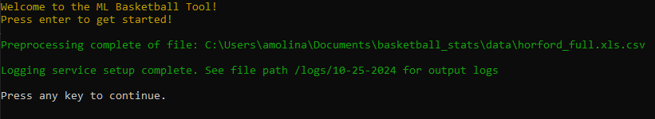
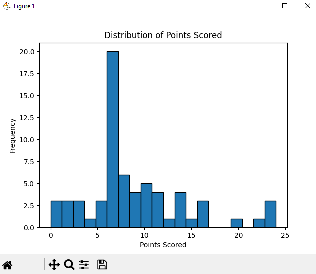
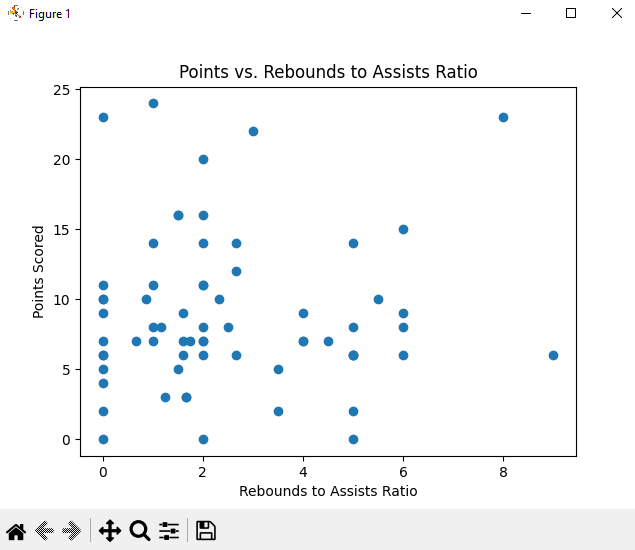
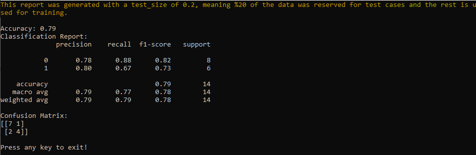
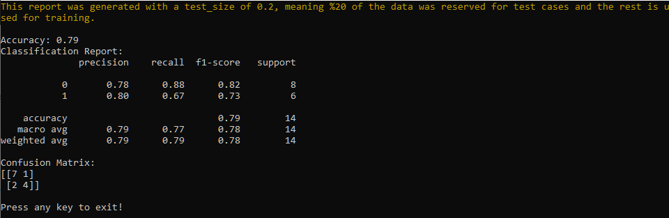
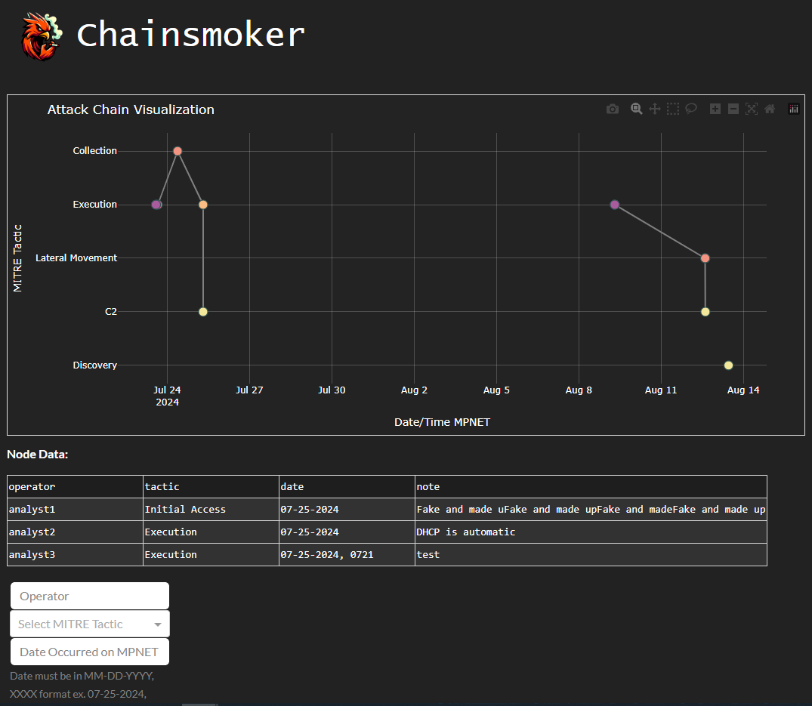

Projects
ML-Based Basketball Stats Tool
   

Python-based data analysis and machine learning tool focused on analyzing player performance, using Tyrese Haliburton's 2023/2024 season data as an example. This program can be adapted for any basketball player by following the same steps.
Github LinkChainsmoker
Python/Dash/Plotly based tool that generates a graphical reconstruction of the development of an attack chain based on the MITRE ATT&CK Framework. Analysts can further comment on individual nodes to further collaborate.
Github Link